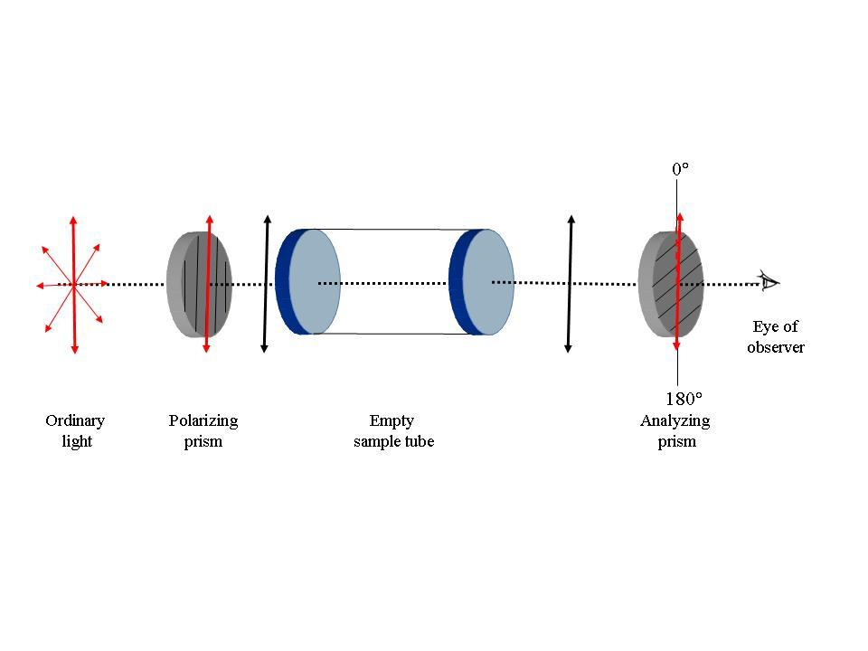

We have already learned from Experiment 1, how chiral molecules are optically active and how chiral substances can be characterized on the basis of their specific rotation [α]. You will have noticed that in that experiment we have used a sodium lamp with a wavelength of 589 nm as the light source, and may be wondering why the wave length of light source needed to be specified.
Well, as has been explained in the following video using sucrose solution as an example, the specific rotation [α] for a given substance, and hence the molar rotation [φ], varies as a function of the wavelength (λ) of the light source.This variation in the optical rotation ([α] or [φ] ) of a substance, with the variation in the wavelength (λ) of light, is known as optical rotatory dispersion (ORD).
When a plane polarised wave passes through an optically active medium some times its state of polarisation also gets affected along with its plane of polarisation and it comes out from the medium as an elliptically polarised light. This phenomena is known as Circular Dichroism.
=======
The study of optical activity of liquids began in the early 19th century with Biot and other scientists. They found that solutions of sugar and certain other naturally occurring chemicals would rotate a beam of polarized light passing through the solution. They called such substances optically active, a term which is still used. The instrument used to demonstrate or to measure this rotation was given the name polarimeter.
Clockwise rotation is given a positive (+) sign; counterclockwise rotation is given a negative (-) sign. Certain substances rotate light to a much greater extent than others. Both the direction of rotation and the amount of rotation per gram of solute in a given volume of solution are characteristic properties and can be used to identify an unknown substance. When the identity of the solute is known, the polarimeter can be used to determine the concentration of the solution.
It may be noted that approximately 25% of all drugs are marketed as either racemates (mixtures of two enantiomers) or mixtures of diasteromers. The orientation around a chiral center can have a dramatic impact on the pharmacological response of that drug in the human body. Such recent observations brought about severe tightening in the laws surrounding the introduction of new drugs into the market. Thus, chiral synthesis and purification became a crucial aspect of all successful drug manufacturing procedures. This is just one of the several areas highlighting the importance of polarimetric studies.
Since polarized light is the basis for all studies of optical activity, you are advised to review the "Background principles" described in the home page of this laboratory. In particular, please go through the tutorials in the pages:
http://www.enzim.hu/~szia/cddemo/edemo1.htm and
http://www.enzim.hu/~szia/cddemo/edemo9.htm
>>>>>>> .r3

Recap of Experiment 1
=======
Chirality and optical activity:
Chiral molecules have an asymmetrical center which respond to light as a lens and rotate the light. The ability to rotate light is termed optical activity and substances that exhibit this property are called optically active substances. Optically active organic molecules have a spiral structure like a right-handed or left-handed screw. It is this spiral nature of the molecule, which rotates the plane of polarization of light passing through it. Right-handed molecules will rotate the plane of polarization clockwise as viewed in the direction of the beam, while left-handed molecules rotate the plane in a counter clockwise direction. If right-handed and left-handed species of a given molecule occurred with equal abundance, then there would be no net effect on the polarization of light passing through. However, naturally occurring biological molecules of a given species are always either purely right-handed or purely left-handed. However, these enantiomer compounds rotate light by exactly the same amount but in the opposite direction. The degree to which a substance rotates light may be used to determine a) the identity of the substance, b) the enantiomer purity of the substance or c) the concentration of a known substance in a solution. In order to observe rotation, the light which is passed through the solution must be plane polarized. Ordinary light has waves which are oriented in all directions. Plane polarized light is made up of waves which are oriented parallel to a defined plane.

|
In experiment:1 we have talked about the phenomenon of polarisation of electromagnetic waves. We have tried to emphasize on two aspects of a plane polarised or linearly polarised wave.
- A plane polarised wave is a composition of a left and a right circularly polarised waves propagating in phase. It is visually described by the following animation. Here the green and the red curve shows propagation of right and left circularly polarised wave respectively. And superposition of them is the blue curve which is a plane polarised wave.
- Whenever a electromagnetic wave enters a medium its velocity gets reduced. The ratio of its velocity in vacuum to its velocity in the medium is known as refractive index and is represented by, n = c0 / v where c0 is the velocity of the wave in vacuum and v is the velocity of the wave in the medium
 source:http://www.enzim.hu/~szia/cddemo/edemo8.htm
source:http://www.enzim.hu/~szia/cddemo/edemo8.htm |
======= >>>>>>> .r3 <<<<<<< .mine
Anisotropic Medium And Speed of Light
In an isotropic medium the properties of the medium are the same in all directions. But in an anisotropic medium the properties become directionally dependent. Anisotropic materials may have different indices of refraction associated with different crystallographic directions. A common situation is that, there are two distinct indices of refraction, and they are called birefringent materials. In case of optically active chilral molecules, they have different refractive indices for different circularly polarised components of a plane polarised wave(nL ≠ nR). That means, once the plane polarised wave enters the medium speed of its right circular part and left circular part will be different(cL ≠ cR). This property is known as circular birefringence.
These two aspects together give rise to the phenomena called Optical Rotation, rotation of plane of polarisation of a plane polarised wave after it passes through an optically active medium.
In experiment 1 we have seen and the Optical Rotation of a light wave (which is an example of EM wave) when it passes through an optically active medium like sugar solution. There we have measured the specific rotation [α]Tλ of the light wave for different concentrations of medium at a fixed wave length of incident light λ~589nm(Na D-line)and fixed temperature T. In the this experiment we are going to observe how the specific rotation changes with wave length of incident light.
Dependence of specific rotation on the wavelength: Optical Rotatory Dispersion
A wave can be characterized by its amplitude and phase. Amplitude of a wave is the maximum displacement of the particles of the medium from its equilibrium position. Whereas phase of a wave is the definition of a point in a waveform. Interaction of the wave with a material effects its velocity and magnitude and this may in turn cause a change in these two characters. If the material is transparent then no change takes place in phase. But in the case of an anisotropic medium there may be difference in velocity of different components of the wave (which causes change in phase). If the medium has absorptive property, then change in amplitude may take place.
The electric vector of a EM wave
is always perpendicular to
the direction of its propagation. For a plane polarised wave the electric vector of its Left circular
part (EL) and the electric vector of its Right circular part (ER) make equal angles with the plane of
polarization (αL and αR) ie they are in phase. As we have discussed, after entering an optically active
medium velocities of the two components of a plane polarised wave (vL and vR) differs from each other.
As a result the angles that EL and ER make with the initial plane of polarisation, no longer remains the
same i.e. αL ≠ αR.
This will give rise to a phase shift between the two components of a plane polarised wave
,δ = αL – αR .
The following figure describes this.
 |
But the superposition of these two oppositely circularly polarised wave will still generate a plane polarised wave with its plane of polarisation rotated to an angle α',as described by the following figure.From the concepts of geometry it may be shown that the angle of rotation α' is half of the phase shift δ.[*]
 |
Now we will see how this angle of rotation depends on the wave length λ of the incident light. To understand the dependence let us first write down the electric vectors of a right circularly polarised and a left circularly polarised wave propagating in the same direction (z) as follows
ER(z)= Eo/2 cosω(t - z/VR)
EL(z)= Eo/2 cosω(t - z/VL)
Here, Eo = the magnitude
ω = angular frequency
z = distance traveled
v = velocity in the medium of the wave
At any instant, the resultant of ER and EL (i.e. ER + EL) will produce a plane polarised wave. We will see how much phase shift is generated when a wave travels a distance, say d, through an optically active medium. For that we can look at the equations of waves at z = 0 and at z = d.
=======
When a beam of plane polarized light passes through a solution of optically active material the light will rotate.

|
ER(o)= Eo/2 cosω t
EL(o)= Eo/2 cosω t
ER(d)= Eo/2 cosω(t - d/VR)
EL(d)= Eo/2 cosω(t - d/VL)
Applying trigonometric laws we can show that the phase difference between ER(0)+EL(0) and ER(d)+EL(d) is given by
δ=ω .d (1/VR - 1/VL)=ω .d/c (nL - nR)
Now as we know, velocity of any EM wave in any medium = (wave length of wave in the mediun) X (frequency in that medium) and angular frequency = 2πX frequency of wave. So,
δ=2π/λ(nL - nR)d
But α'= δ /2. So we can have angle of rotation directly as a function of wave length as,
α '= δ/2= π/λ(nL - nR)d
So with change in the wavelength of a light, its optical rotation will also change for the same medium. This phenomena is known as Optical Rotatory Dispersion.
In practical purpose, to study ORD one usually looks at two parameters – specific rotation [α]Tλ and molecular rotation [M]Tλ. They are defined as follows.
 |
A plot of [α]Tλ or [M]Tλwith wavelength λ is known as ORD spectra. From an ORD spectra of an unknown material we can have an understanding of the optical properties of the material.
Absorption and Extinction Coefficient- A Recap
When an EM wave passes through a medium, the energy of its photon may be taken up by the electrons of the atoms of the medium. This is called absorption. As a result the wave loses its energy and its amplitude gets reduced. This is called attenuation of a wave. Absorption may occur for any type of polarised wave. The following figures exhibit how a linearly polarised wave and a circularly polarised wave are attenuated by an absorptive medium.
| Absorption of plane polarised light source:http://www.enzim.hu/~szia/cddemo/edemo10.htm |
Absorption of circularly polarised light source:http://www.enzim.hu/~szia/cddemo/edemo11.htm |
The ratio of radiant power transmitted (P) by a sample to the radiant power incident (P0) on the sample is called the transmittance, T: T = P/P0
Absorbance (A), then, is defined as the logarithm (base 10) of the reciprocal of the transmittance:
A = -log T = log (1/T)
In a spectrophotometer, monochromatic plane-parallel light enters a sample at right angles to the plane-surface
of the sample. In these conditions, the transmittance and absorbance of a sample depends on the molar concentration
(c), light path length in centimetres (L), and molar absorptivity (ε) for the dissolved substance at the specified
wavelength (λ).
Tλ = 10εcL or Aλ = εcL
Beer’s Law states that molar absorptivity is constant (and the absorbance is proportional to concentration) for a given substance dissolved in a given solute and measured at a given wavelength.
For this reason, molar absorptivities are called molar absorption coefficients or molar extinction coefficients. Because transmittance and absorbance are unitless, the units for molar absorptivity must cancel with units of measure in concentration and light path. Therefore, molar absorptivities have units of M-1cm-1.
Circular Dichroism – The transformation of plane polarized light into elliptically polarized light
Some asymmetric (chiral) materials possess a special property that they absorb left circularly polarized light (LCPL) to a different extent than right circularly polarized light(RCPL). Such materials are said to be exhibiting the phenomenon of Circular Dichroism or CD (The word 'dichroism' means that the material absorbs two different types of light differently).
Following Beer's law if absorbance of LCPL AL is different from absorbance of RCPL AR then,
AR ≠AL
i.e. εRcL ≠εLcL
i.e. εR ≠ εL
We can study the effects of circular dichroism as a difference between molar extinction coefficients (∆ε = εR - εL) of LCPL and RCPL.
Now let us discuss the results of circular dichroism on a plane polarised light. So if a plane polarised light enters a a circular dichroic substance its two circular components undergo through separate absorptive effect of the medium. So the resultant wave will no longer be a linearly polarized wave i.e. the resulting field vector does not oscillate along a straight line but it rotates along an ellipsoid path. Such a light wave is called an elliptically polarized light. The direction of rotation of the elliptically polarized light (or, more exactly, its field vector) is determined by the circular component that remains stronger after traversing the material
 source:http://www.enzim.hu/~szia/cddemo/edemo14.htm source:http://www.enzim.hu/~szia/cddemo/edemo14.htm |
As is evident from the figure above, one of the axis of the ellipse is parallel to the polarization plane of the original light wave and another is orthogonal to it. This is the case when the material doesn't show any refraction. However, there may be a difference between the refractive indices of the material for the RCPL and LCPL as well. Then the axis of of the elliptically polarised resultant wave undergoes a rotion and no longer remains parallel to the plane of polarisation of the original wave any more. The material is said to posses both Circular Birefringence and Circular Dichroism.
As we have measured ORD by specific rotation, in this case we also use parameters like delta absorbance, molar circular dichroism, molar ellipticity, molar residue ellipticity etc to measure the CD. Here are definition, description and the inter relation of these parameters.
Goal of The Experiment
This experiment has two parts. The first part elaborates the effect of an anisotropic medium on the velocity of light passing through it. It shows how the plane of polarisation of a plane polarised light changes when RI of its two circularly polarised components are different from each other. It also describes the dispersive phenomena of optical rotation caused by the medium.
The second part of the experiment demonestrates the effect of an anisotropic medium on the amplitude of the wave passing through it. It exhibits how state of polarisation of a plane polarised wave changes when rate of absorbance of its two circularly polarised components are different.
Notes:
[*]Geometric explanation of α'= δ/2

Disclaimer:
The figures used for explaining phase shift due to Optical Rotation is adopted from
http://www.pci.uzh.ch/nonella/Anleitungen/ORD.pdf
The download site of Prof Marco Nonella
Institute of Physical Chemistry,
University of Zurich
This is because, when light interacts with matter, two basic phenomena occur, namely, absorption and the decrease in the velocity of light. Absorption is the decrease in the intensity of light because a part of the incident light is absorbed by the material. The decrease in velocity of light is due to refractive index of the material, because the velocity of light is smaller in the material than in the vacuum.
If the refraction index of the material differs between left and right circularly polarized light, then such materials are shown to exhibit a phenomenon called circular birefringence. Circular birefringence rotates the plane of polarization of the resultant plane-polarized light. This is termed as optical rotation. The angle by which the polarization plane of the light exiting the medium rotates with respect to the original polarization plane is determined by the difference between the refraction indices for the two circularly polarized components (and on the length of path traversed in the medium). Any molecule which exhibits optical rotation or make plane-polarized light elliptically polar is called an optically active material.
How do chiral molecules exhibit Optical Rotation?
Interestingly, a monochromatic linearly polarized light beam can be considered as a superposition of two circularly polarized electromagnetic waves that are propagating in the same direction with the same frequency but the opposite sense of rotation. The plane of polarization of the resulting linearly polarized wave thus prepared can be changed (rotated) by applying a phase shift between its two circularly polarized components. With the help of this concept we can explain the phenomenon of optical rotation: We have seen that chiral molecules interact slightly differently with the two circularly polarized components of a linearly polarized light beam. This is true both for absorption and refraction. Left- and right hand circularly polarized light beams also have slightly different refractive indices in a chiral medium. This means that even if they are not absorbed they travel at different speeds through the medium. Therefore, this causes a phase shift between the two circularly polarized components which increases proportional to the path length that the light travels through the chiral medium. This phase shift manifests itself as a rotation of the plane of polarization of the resultant linearly polarized light beam - optical rotation.
The degree of rotation of the plane polarized light depends on the wavelength of the light (usually, the yellow sodium D line near 589 nm wavelength is used), the optical path length, the concentration of the solution, and the chemistry of the molecule. Under identical conditions, some molecules rotate polarized light more than the others do. In order measure how good chiral molecules rotate plane- polarized light, a term called as the "specific rotation" was coined. The specific rotation of a substance is an intrinsic characteristic similar to other properties such melting point, or solubility. By convention, the specific rotation of a chemical is defined as the observed rotation when light of a specified wavelength passes through sample path length of one decimeter (1 dm = 10 cm) and a sample concentration of 1 g/mL.
Circular birefringence and optical rotation
Chiral molecules exhibit circular birefringence, which means that a solution of a chiral substance presents an anisotropic medium through which left circularly polarised (L-CPL) and right circularly polarised (R-CPL) propagate at different speeds. A linearly polarised wave can be thought of as the resultant of the superposition of two circularly polarised waves, one left-circularly polarised, the other right-circularly polarised. On traversing the circularly birefringent medium, the phase relationship between the circularly polarised waves changes and the resultant linearly polarised wave rotates. This is the origin of the phenomenon known as optical rotation, which is measured using a polarimeter. Measuring optical rotation as a function of wavelength is termed optical rotatory dispersion (ORD) spectroscopy.

|
Circular birefringence:the orange cuboid represents the sample
For pure liquids:
[α]Tλ = α/(l * d)
In this equation,
l is the path length in decimeters
d is the density of the liquid in g/mL for a sample at a
temperature T (given in degrees Celsius) and wavelength λ (in nanometers).
If the wavelength of the light used is 589 nanometer (the sodium D line), the symbol “D” is used. The sign of the rotation (+ or -) is always given.
For solutions, a different equation is used:
[α]Tλ = 100 * α/(l * c)
In this equation,
l is the path length in decimeters
c is the concentration in g/100mL for a sample at a
temperature T (given in degrees Celsius) and wavelength λ (in nanometers).
When using this equation, the concentration and the solvent are always provided in parentheses after the rotation. The rotation is reported using degrees, and no units of concentration are given (it is assumed to be g/100mL).
Functioning of the polarimeter
a
|  |
b

|
Fig. 1: Schematic representation of the functioning of the polarimeter.
a. When the sample tube is empty, the planes of polarization of the polarizing and the analyzing prisms are same and αobs is 0°
b. When the sample tube has a solution of a chiral (optically active) substance, the plane of polarization of the emergent polarized light changes. One now needs to rotate the analyzer prism for its plane of polarization to coincide with the plane of the emergent light. This corresponds to the maximum intensity of the transmitted light. The αobs is shown with a green arrow.
>>>>>>> .r3
The purpose of the lab is to understand the effect of chiral substance on a plane polarised light as a function of wave length.
By doing this experiment the user will be able to understand that:
(1) A plane polarised light is made up of one Right Circularly and one Left Circularly polarised light.
(2) Different Refractive Indexes for different circularly polarised components of an anisotropic medium give rise to Optical Rotation.
(3) Different rate of absorption for different circularly polarised components of an anisotropic medium gives rise to Circular Dichroism.
(4) Optical Rotation depends on the wave length of incident light and results Optical Rotatory Dispersion.
=======The purpose of this lab is to use optical rotation as a method for determining the identity of unknown sugars. By doing this experiment the user will be able to:
>>>>>>> .r3
- Understand the interaction of plane polarized light with solutions of chiral substances
- Understand various processes and techniques involved in measuring the optical activity of sugar solutions using polarimeter.
- Understand the step-by-step procedure including most details from preparing the sample to identification of sugar solution used as part of the experiment.

Click here to observe dispersive effect.
Click here to observe absorptive effect.
Click here to start the experiment.
>>>>>>> .r3

The experiment is devided inte two parts:
- Study of dispersive effect
- Study of absorptive effect
=======
In this experiment, the user will prepare a sugar solution of known concentration (c), but unknown identity. The user will obtain the observed rotation (αobs) from the experiment using the polarimeter and use that information to calculate the specific rotation [α] of the given sample using the above formula. The identity of the sample can thus be found out from the given list of specific rotations for different chemicals.
The procedure to perform this experiment is self-explanatory and leads the user in a step-by step manner to accomplish the task. The protocol briefly involves the following steps:
- User will click on the virtual lab link (simulator).
- To know details regarding the instrumentation of the polarimeter. i.Click on “Know Your Polarimeter” option.
- To directly perform an experiment using the polarimeter. i.Click on any of the 6 sugar sample in the bottles on the shelves.
- Estimate the specific rotation [α] using the equation for liquids.
- Compare the obtained specific rotation [α] value against the table provided below to identify the identity of the sugar used in the experiment.
- Click on save form and perform calculations and choose the appropriate identity of the unknown sugar you have used in the experiment.
- Either click on “Click to restart the experiment” and follow the instructions from step 3 or “Click to try with same sample sugar” and follow the instructions from step 3, substep (ii).
ii.Click on the Polarimeter to Zoom-in as indicated by an arrow.
iii.Click on the red button provided to switch on the polarimeter and to see the light source in the polarimeter instrument.
iv.Click on the panel indicated by arrow to open the sample chamber.
v.After you see 100% Intensity of the light coming through the eye piece at α20Dthen click Continue.
vi.Click on the button “click to record experiment without login” to perform an experiment and further follow instructions as detailed in step 3.
ii.Type in the amount of sugar (in gm/100mL) that you want to use for the experiment in the text box provided and then presses enter on the keyboard.
iii.Click on one of the sample cells to transfer the prepared sugar solution into a cell of particular path length.
iv.After transferring the contents into the sample cell, click on the sample cell to place it into the polarimeter’s sample chamber.
v.Click on the power button to switch on the polarimeter to record the optical rotation of the sample.
vi.To rotate the dial of the eye piece in clockwise direction click on ‘+’ button and for anticlockwise direction click on ‘-’ button.
vii.To change the Increment Factor click on the IF* buttons 1, 5 or 10 accordingly.
viii.Rotate the dial both in clockwise and anti-clockwise directions for the whole 360o until you see a maximum light intensity in the right semicircle, matching the left semicircle exactly.
ix.Click on open record form and note down all the 4 different αobs angles where you observed maximum Intensity.
| Chemical name | Specific rotation[α]20D |
| D-glucose | +52.7 |
| Lactose | +55.4 |
| D-fructose | -92.4 |
| L-arabinose | +104.5 |
| D-mannose | +14.2 |
| D-arabinose | +105.0 |
| D-xylose | +18.8 |
| D-galactose | +80.2 | Sucrose | +66.5 | Maltose | +130.5 | Dextrin | +195 |
*NOTE: While doing the experiments you will notice that if the maximum intensity of light is observed at x° degree, it is also observed at (180+ x)° degree. From a single experiment, it is not possible to infer which the value for total rotation αtotal actually is. Then again, the observation only tells us about the orientation of the plane of polarization of the emergent light relative to that of the incident light. However, one can not off hand say anything about what is the actual total rotation the plane has undergone. Thus, for example, the observation of maxima at x° and at (180 + x)° may mean that the value of αtotal could also be (360n + x) °; where n = 0, 1, 2, … Similarly, it could also be that αtotal is -(360 - x)° or –(360 - (180 + x))° depending on whether the rotation of the light has taken place in the anticlockwise or clockwise direction. For example if the maximum intensity is observed at α value of 30° and 210° , then could be any one of the values: 30°, 210°, -330°, -150° or even 390° or 570°. To confirm the actual value of αtotal, one needs to repeat the experiment using different concentration and variable path lengths. Though there would be an ambiguity regarding the αtotal for each of these experiments, the correct choices would provide the same specific rotation [α]Tλ or [α]20D
Sample data for the experiment
>>>>>>> .r3

Click here to have a self evaluation.
=======
Click here to have a self evaluation.
>>>>>>> .r3

- These codes may be downloaded and used to understand the phenomena of ORD and CD better.
emanim_ord.py
emanim_cd.py - CD, ORD and Absorbance spectra
http://www.photophysics.com/opticalactivity.php - CD
http://www.niu.edu/analyticallab/cd/handout.pdf - ORD
http://www.pci.uzh.ch/nonella/Anleitungen/ORD.pdf
- Basic Concepts of Stereochemistry
- Description of polarimetry, optical activity and specific rotation:
polarimeters_in_college_chemistry_courses.doc - Polarimetry_ORD_CD_Chapter.pdf
- Animated Tutorial Explaining Electromagnetic waves and types of polarization:
http://www.enzim.hu/~szia/cddemo/edemo1.htm - To try your own EMANIM animation of the CD concepts with variable parameters, Please download the software from:
http://www.enzim.hu/~szia/emanim/emanim.htm